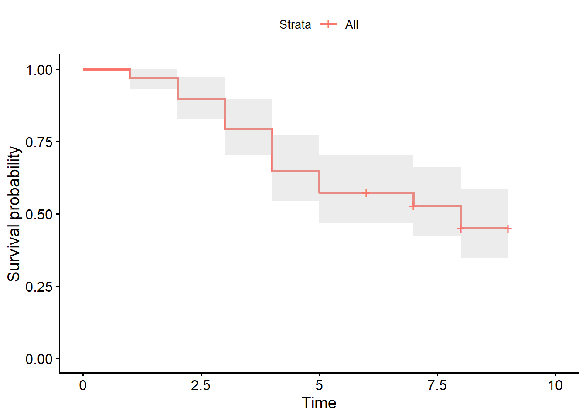
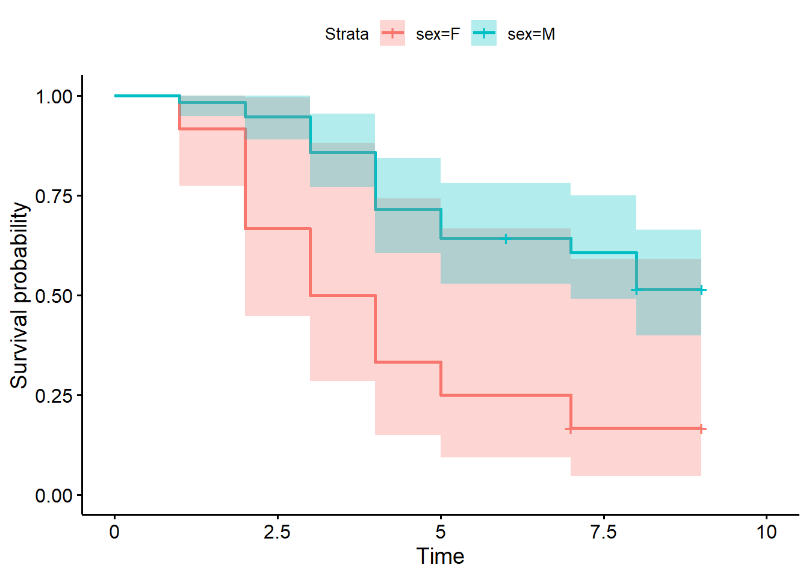

{kind=link}
# Load packages
library(tidyverse)
library(survival)
library(survminer)
# Load Data
ninja <- read_csv("anw_2021_stage1.csv")American Ninja Warrior - Kaplan-Meier Survival Analysis
Kaplan-Meier
Log Rank test
Nonparametric tests
Exploring Survival Analysis using the Kaplan-Meier method with American Ninja Warrior data.
Welcome video
Introduction
In this module, you will explore American Ninja Warrior data from the 2021 stage 1 finals through the lens of survival analysis. Survival analysis is a statistical method used to analyze the time until an event of interest occurs (often this event is death). In this case, the obstacles will be our time, and the event of interest will be DEATH (we’re calling failing an obstacle death).
American Ninja Warrior Logo 
Image Source Wikimedia, Public Domain
One of the simplest methods for performing survival analysis is the Kaplan-Meier method. This method estimates the survival function, which is the probability that a subject survives past a certain time. The Kaplan-Meier method is non-parametric, meaning it makes no assumptions about the distribution of the survival times. It is a step function that decreases at each event time.
NOTE: R is the name of the programming language itself and RStudio is a convenient interface. To throw even more lingo in, you may be accessing RStudio through a web-based version called Posit Cloud. But R is the programming language you are learning :)
Getting started: American Ninja Warrior data
The first step to any analysis in R is to load necessary packages and data.
Running the following code will load the tidyverse, survival, and survminer packages and the anw_2021_stage1 data we will be using in this lab.
TIP: As you follow along in the lab, you should run each corresponding code chunk in your .qmd document. To “Run” a code chunk, you can press the green “Play” button in the top right corner of the code chunk in your .qmd. You can also place your cursor anywhere in the line(s) of code you want to run and press “command + return” (Mac) or “Ctrl + Enter” (Windows).
TIP: If you get an error while attempting to load the library or data, you may need to install the package or check the file path. You can install packages using the install.packages() function in R. Once you have installed a package, you can load it into your R environment using the library() function. If that is not the issue, you may need to check the file path to ensure the data is in the correct location.
We can use the glimpse() function to get a quick look at our ninja data. The dimensions of the dataset, the variable names, and the first few observations are displayed.
glimpse(ninja)Rows: 69
Columns: 5
$ name <chr> "Meagan Martin", "DeShawn Harris", "Heather Weissinger…
$ sex <chr> "F", "M", "F", "M", "F", "F", "M", "M", "M", "F", "F",…
$ obstacle <chr> "Slide Surfer", "Slide Surfer", "Swinging Blades", "Sw…
$ obstacle_number <dbl> 1, 1, 2, 2, 2, 2, 2, 3, 3, 3, 3, 3, 3, 3, 4, 4, 4, 4, …
$ cause <chr> "Fall", "Fall", "Fall", "Fall", "Fall", "Fall", "Fall"…Use the head() function to view the first few rows of the dataset better.
head(ninja)# A tibble: 6 × 5
name sex obstacle obstacle_number cause
<chr> <chr> <chr> <dbl> <chr>
1 Meagan Martin F Slide Surfer 1 Fall
2 DeShawn Harris M Slide Surfer 1 Fall
3 Heather Weissinger F Swinging Blades 2 Fall
4 Cam Baumgartner M Swinging Blades 2 Fall
5 Brittney Durant F Swinging Blades 2 Fall
6 Casey Rothschild F Swinging Blades 2 Fall
TIP: Type your answers to each exercise in the student_template.qmd document. You can rename this file using your own name.
Terms to know
Before proceeding with the survival analysis, let’s make sure we understand American Ninja Warrior and some of it’s vocabulary to help us climb our way through this lab.
How does American Ninja Warrior work?
American Ninja Warrior is an NBC competition show where participants attempt to complete a series of obstacle courses of increasing difficulty. In a single obstacle course, the competitors must complete a series of obstacles in a row. If they fail an obstacle (usually this happens when they fall into the water below), they are eliminated from the competition. The competitors also have a time limit to complete the course. The competitors are ranked based on how far they get in the course and how quickly they complete it.
Most of the obstacles are designed to test the competitors’ upper body strength. Some obstacles require balance and agility though.
The warped wall is arguably the most famous, although now least difficult, obstacle on an American Ninja Warrior course. The warped wall is a curved wall that competitors must run up and grab the top of. The warped wall is on every course and is often the final obstacle, although this is not the case on the Finals courses.
The warped wall was previously 14 feet and is now 14.5 feet tall. They have even had a 18 foot warped wall on the show.
Image Source: Dustin Batt, CC BY-SA 2.0, via Wikimedia Commons
{kind=link}
The obstacles in American Ninja Warrior are all given names. For example, the famed Warped Wall is a curved wall that competitors must run up and grab the top of. The Salmon Ladder is a series of rungs that competitors must move up by jumping and pulling themselves up.
Watch Enzo Wilson complete the American Ninja Warrior course at the 2021 Finals Stage 1 (Season 13) in the video below.
Variable Descriptions
The ninja data you’ll be analyzing in this lab provides the individual run information for each ninja in the 2021 Finals Stage 1 (Season 13). The data includes the ninja’s name, their sex, the obstacle they failed on, and the cause of that failure.
| Variable | Description |
|---|---|
name |
Name of the American Ninja Warrior |
sex |
Sex of the American Ninja Warrior (M/F) |
obstacle |
The name of the obstacle the ninja fell on or the last obstacle they completed if they ran out of time or finished the course |
obstacle_number |
The obstacle’s place in the run |
cause |
What caused the ninja to fail (Fall/Time/Complete) |
Note: It is important to recognize that if the competitor fell on the 7th obstacle the obstacle number is 7. However, if the competitor ran out of time on the 7th obstacle, the obstacle number is 6, since the 6th obstacle was the last time that we could say they either fell or completed an obstacle. This will be important for censoring later. If the competitor completed the course, the obstacle number is set to the last obstacle they completed, which is the 9th obstacle in the 2021 Finals Stage 1 course.
Points of Confusion
Use the following code to create a table of the obstacle names and their corresponding obstacle numbers. This will help you understand the order of the obstacles in the course.
ninja |>
distinct(obstacle, obstacle_number)# A tibble: 10 × 2
obstacle obstacle_number
<chr> <dbl>
1 Slide Surfer 1
2 Swinging Blades 2
3 Double Dipper 3
4 Jumping Spider 4
5 Tire Run 5
6 Dipping Birds 7
7 Warped Wall 6
8 The High Road 8
9 Fly Hooks 8
10 Cargo Net 9It can be seen quickly that there are 2 obstacles with number 8. The duplicate obstacle number 8 is due to the fact that Stage One of the 2021 Finals allowed a split-decision. This means that competitors could choose between two different obstacles for obstacle 8.
Read about the 2021 Stage 1 Split Decision here.
Additionally, one competitor Joe Moravsky ran the course twice (falling the first time and completing it the second time). This is because he was the Safety Pass Winner from the previous round. The Safety Pass allows a competitor to run the course again if they fail the first time. This poses some questions about how to handle this observation. We could
Include both runs in the analysis, treating them as separate observations.
Include only the first run in the analysis.
Include only the second run in the analysis.
If we include the second run in the analysis, we are neglecting the fact that Joe Moravsky had already attempted the course once and may have learned from his mistakes.
If we include the first run in the analysis, an argument could be made that Moravsky only failed the first time because he knew he had a second chance.
In most survival analysis situations, an individual would not be capable of participating twice from the beginning (after all if death were truly the event of interest, it would be safe to say there is no second chance). Therefore, we will only include the first run in the analysis.
Run the code below to remove the second run from the data.
ninja <- ninja |>
filter(name != "Joe Moravsky (Safety Pass)")Now that we’ve cleared some of the muddiness, let’s move on to the fun stuff!
Kaplan-Meier Survival Analysis
Binary outcome data (life/death, success/failure) is common in many settings. As an example, the Worcester Heart Attack Study involves patients hospitalized with acute myocardial infarction (AMI, essentially a heart attack). Many outcomes have been analyzed for this data, but suppose we were interested in the event of a second heart attack. We could choose a date after the initial hospitalization, such as 1 year, and examine the probability the subjects have had a second heart attack at that time point. The event would be binary (1 = had second heart attack in first year, 0 = did not have a second heart attack).
The one year analysis ignores an important aspect of the data, the actual time until a second heart attack occurs. For example, if we are interested in comparing two treatments and those on treatment A average 5 years longer until a second heart attack, that would be useful information.
Survival analysis is an approach to such time-to-event data. Primary interest is in the survival function which gives the probability of surviving longer than a time, \(t\):
\[S(t) = P(T > t)\]
where T is the event (in our example the 2nd heart attack) and t is the time (in years for our example).
Censored Data
In survival analysis, we often need to censor data. Censored data occurs when the event of interest has not occurred for some of the observations. For the heart attack example, suppose we follow subjects for 10 years. It is not unlikely that some will not have a second heart attack in that time. It is also possible that we are unable to follow all subjects for the full 10 years. Such data is censored. We have information that the person did not have a second heart attack for a certain amount of time, but we do not have information beyond that time.
We could, of course, just exclude these observations and use only those who had a second heart attack. The problem is that this creates potential bias. Suppose those who had treatment A do not have a second heart attack as quickly. More in that group might not have a heart attack in the 10 years. By excluding them we would bias our estimate of the average time until a heart attack for this group to be shorter than it actually is.
Introducing Survival Analysis using American Ninja Warrior Data
In the heart attack study, we have two key variables. One is the time each subject is observed \(t\) = years, which we suppose are only integer values 1, 2, 3,…(technically this would be interval censored data but we will not explore this more advanced topic here). The second is the censoring variable \(c_i\), which tells us if we observed the event \(c_i = 1\) or not \(c_i = 0\).
Our data for two subjects might look like:
Subject | Time | Censor |
|---|---|---|
1 | 8 | 1 |
2 | 10 | 0 |
We see that subject 1 was observed for 8 years and had a heart attack at year 8. Subject 2, on the other hand, was observed for the full 10 years and did not have a heart attack.
To illustrate survival analysis for the ANW data, we will define the time using the obstacle number. So, instead of time \(t = 0, 1, 2,...\) years we will have time \(n = 0, 1, 2, 3,...\) obstacles. Note that there is an actual time element to the obstacle course, but for the purpose of learning survival analysis our time is the obstacle number.
The event of interest is the failure of a competitor on an obstacle. This is important as it is possible to fail the course itself, for stage 1, if the allotted time expires. However, that is not the outcome of interest here.
As with the heart attack example, there are several ways in which the data might be censored. If a competitor completes the course, we do not know how many obstacles they would complete before the event (failing an obstacle) would occur. This is similar to the case where a subject was followed for 10 years without a heart attack; our subject was followed for 9 obstacles (our time variable) without failing an obstacle.
An additional possible censoring occurs if the time limit is reached. Again, if that occurs we do not know how many obstacles the competitor would complete before failing one, although we do know that they didn’t fail on any of the ones they completed before time was up. In the heart attack study this would be similar to a case where we observed a subject for 6 years and they died due to some other cause but never had a heart attack.
Note: Another advanced survival model involves analyzing “competing risks” if interest is in multiple different outcomes such as death from a heart attack or death from some other cause. In the ANW case, failing an obstacle or running out of time would be competing risks. We will not explore this topic here.
Use the code below to create a new column called censor in the ninja data that is a binary indicator of whether or not the observation should be censored. This column will be used to indicate whether the data is censored or not.
# Makes a column called censor that is 1 if the competitor failed and 0 if they completed the course or ran out of time
ninja <- ninja |>
mutate(censor = if_else(cause %in% c("Complete", "Time"), 0, 1))Three competitors in the resulting data are:
name | sex | obstacle | obstacle_number | cause | censor |
|---|---|---|---|---|---|
Meagan Martin | F | Slide Surfer | 1 | Fall | 1 |
Sean Bryan | M | Cargo Net | 9 | Complete | 0 |
Brett Sims | M | Fly Hooks | 8 | Time | 0 |
We can interpret this data:
- Meaghan Martin failed on the first obstacle so the time (obstacle_number) is 1 and censor = 1.
- Sean Bryan completed the course so the obstacle_number is 9 but censor = 0. We do not know how many obstacles Sean completes before failing one; he moved on to the second stage course but we did not collect data after the first stage. He was censored due to the “study time” of 9 obstacles.
- Brett Sims ran out of time while on the 9th obstacle. We know he completed 8 obstacles so his “time” is obstacle_number = 8 but we do not know if he would have failed the 9th obstacle or not (or any further obstacles) so his observation is censored.
Estimating the Survival Function using Kaplan-Meier
The Kaplan-Meier estimator uses information from all of the observations in the data to provide a non-parametric estimate of the survival function. The estimator considers survival to a certain point in time as a series of steps defined at the observed times.
In order to calculate the probability of surviving past a certain point in time (past a certain obstacle in this case), the conditional probability of surviving past that point given that the competitor has survived up to that point must be calculated first.
The formula for the conditional probability of surviving past a point in time (\(t_i\)) given that the competitor has survived up to that point in time(\(t_{i-1}\)) is:
Note: This function could also be written as \(P(T > t_i | T \geq t_{i-1}) = \frac{n_i - d_i}{n_i}\)
\(P(T \geq t_i | T \geq t_{i-1}) = 1- \frac{d_i}{n_i}\)
Where:
\(d_i\) is the number of competitors that failed at time \(t_i\)
\(n_i\) is the number of competitors that were at risk at time \(t_i\)
The Kaplan-Meier estimator is the product of the conditional probabilities of surviving past each point in time up through that point in time.
\(\hat{S}(t) = \prod_{t_i \leq t} (1 - \frac{d_i}{n_i})\)
Note: Censored data does not count in the at risk competitors
where \(n_i = n_{i-1} - d_{i-1} - c_{i-1}\)
- \(c_i\) is the number of competitors censored at time \(t_i\)
For example, we create a data set with 25 competitors and 5 obstacles:
# Setting a seed for reproducibility
set.seed(123)
# Creating fake data
fake_data <- tibble(obstacle_number = c(1:5, 2,5), censor = c(rep(1, 5), rep(0, 2))) |>
sample_n(25, replace = TRUE)
head(fake_data)# A tibble: 6 × 2
obstacle_number censor
<dbl> <dbl>
1 5 0
2 5 0
3 3 1
4 2 0
5 3 1
6 2 1Each row of the data is a competitor (\(i = 1,...,25\)) and the first column (“obstacle_number”) is the last obstacle for which each was observed. The “censor” variable is the indicator of whether the obstacle was failed (1 = failed).
We will step through a few calculations to illustrate the Kaplan-Meier (KM) estimator. The calculation is easiest if the data is put in a format by the obstacle number (time) when things occurred. The code below produces this format:
fake_data_summary <- fake_data |>
group_by(obstacle_number) |>
summarize(fails = sum(censor == 1),
censored = sum(censor == 0)) |>
ungroup()
fake_data_summary# A tibble: 5 × 3
obstacle_number fails censored
<dbl> <int> <int>
1 1 4 0
2 2 3 4
3 3 7 0
4 4 2 0
5 5 3 2We see that each obstacle (time) had events. For the first obstacle, these events were all failures (4 fell). At obstacle 2, there were 3 failures but 4 censored. The censored competitors ran out of time before they could either complete or fail obstacle 3. We similarly see failures and censored observations at the last obstacle. Those censored at the last obstacle were those who completed the course.
Suppose we wanted to calculate the Kaplan-Meier estimate of surviving past obstacle 2 we would need to find the following probabilities:
\(P(T > 1 | T > 0) = P(T > 1) = 1 - \frac{\text{number of competitors that failed at obstacle 1}}{\text{number of competitors that attempted obstacle 1}}\)
\(P(T > 2 | T > 1) = 1 - \frac{\text{number of competitors that failed at obstacle 2}}{\text{number of competitors that attempted obstacle 2}}\)
Below we calculate the first probability:
fake_data_summary <- fake_data_summary |>
mutate(at_risk = c(25,rep(NA,4)),
p_surv_cond = (at_risk - fails)/at_risk,
p_surv_km = p_surv_cond*1)
fake_data_summary# A tibble: 5 × 6
obstacle_number fails censored at_risk p_surv_cond p_surv_km
<dbl> <int> <int> <dbl> <dbl> <dbl>
1 1 4 0 25 0.84 0.84
2 2 3 4 NA NA NA
3 3 7 0 NA NA NA
4 4 2 0 NA NA NA
5 5 3 2 NA NA NA We compute the probability using the formula earlier:
\(P(T > t_i | T \geq t_{i-1}) = \frac{n_i - d_i}{n_i}\)
We create a column for the number at risk (\(n_1\)) which is 25 for the first obstacle. \(d_i\) is found already in the “fails” column.
In order to compute the second probability, we need to compute the next at risk value, \(n_2\). This value is 25 minus the 4 failures or 21. Since 0 were censored, we do not lose any other competitors. From there, we can again compute the conditional probability using the formula:
fake_data_summary <- fake_data_summary |>
mutate(at_risk = c(25, 21, rep(NA,3)),
p_surv_cond = (at_risk - fails)/at_risk)
fake_data_summary# A tibble: 5 × 6
obstacle_number fails censored at_risk p_surv_cond p_surv_km
<dbl> <int> <int> <dbl> <dbl> <dbl>
1 1 4 0 25 0.84 0.84
2 2 3 4 21 0.857 NA
3 3 7 0 NA NA NA
4 4 2 0 NA NA NA
5 5 3 2 NA NA NA Finally, we then need to multiply these two probabilities together to get the Kaplan-Meier estimate of surviving past obstacle 2.
\(P(T > 2) = P(T > 1) * P(T > 2 | T > 1)\)
The following code calculates the Kaplan-Meier estimate of surviving past obstacle 2:
fake_data_summary$p_surv_km[2] <- fake_data_summary$p_surv_cond[1]*
fake_data_summary$p_surv_cond[2]
fake_data_summary# A tibble: 5 × 6
obstacle_number fails censored at_risk p_surv_cond p_surv_km
<dbl> <int> <int> <dbl> <dbl> <dbl>
1 1 4 0 25 0.84 0.84
2 2 3 4 21 0.857 0.72
3 3 7 0 NA NA NA
4 4 2 0 NA NA NA
5 5 3 2 NA NA NA The Kaplan-Meier estimate of surviving past obstacle 2 in this fake example is 0.72.
Kaplan-Meier Estimator Manual Calculation
The ninja data frame contains information about individual competitors in the ninja competition. We will need to summarize the data to calculate the Kaplan-Meier estimator manually.
Note: The censored column is the number of competitors that were not tracked after that obstacle. For any obstacle that is not the last one, the number censored are the amount that ran out of time on the next obstacle. For the last obstacle, the number censored are the competitors that completed the course.
Note: The lag function shifts the cumsum of the fails column down one row. The default = 0 argument fills in the first row with 0. This is necessary to help calculate the number of competitors at risk at each obstacle. Note that the lag function is not used in conjunction with the cumsumfunction for the censored column.
TIP: You can pipe the data frame into the mutate function to create a new column.
TIP: The mutate function works like so: data_frame |> mutate(new_column = calculation)
Note: The cumprod function calculates the cumulative product of the values given to it.
Type ?geom_step, ?geom_point, or ?ggplot in the console to learn more about these functions.
TIP: Remember that you can add the + operator to continue adding layers to the plot like seen below
ggplot(your_data, aes(x = time_var, y = kaplan_meier_var)) +
geom_step() +
geom_point()TIP: You can also add labels to the plot using the labs function like seen below
ggplot(your_data, aes(x = time_var, y = kaplan_meier_var)) +
geom_step() +
geom_point() +
labs(title = "Your Title",
x = "X Axis Label",
y = "Y Axis Label")Using R Packages to Automatically Calculate the Kaplan-Meier Estimator
Phew! That was a lot of tedious work to calculate and plot the Kaplan-Meier estimator manually. Luckily, there is a much easier way to calculate the Kaplan-Meier estimator using R.
The survival package in R provides a function called survfit that can be used to calculate the Kaplan-Meier estimator. The survfit function requires a Surv object as input. The Surv object is created using the Surv function, which requires two arguments:
The time to event data. The time to event data is the time at which the event occurred or the time at which the individual was censored. In our case this is the
obstacle_numberin ourninjadata.The event status. The event status is a binary variable that indicates whether the event occurred or the individual was censored. The event status is coded as 1 if the event occurred and 0 if the individual was censored. This is contained in the
censorcolumn of theninjadata.
Below a survfit model is created for the ninja dataset and the results are stored in the ninja_km object.
ninja_km <- survfit(Surv(obstacle_number, censor) ~ 1, data = ninja)The computations for calculating the Confidence Interval for the K-M Estimate are fairly complex. The method most commonly used is called the log-log survival function and was proposed by Kalbfleisch and Prentice (2002). This function is computed by \(ln(-ln[\hat{S}(t)])\) with variance derived from the delta method and calculated by \[ \frac{1}{[ln(\hat{S}(t))]^2}\sum_{t_i\leq{t}}\frac{d_i}{n_i(n_i - d_i)} \].
The endpoints for the confidence interval for the log-log survival function are therefore found by \(ln(-ln[\hat{S}(t)]) \pm Z_{1-\alpha / 2} SE [ln(-ln[\hat{S}(t)]) ]\)
And the endpoints expressed by the computer and seen in the summary are \(exp[-exp(\hat{c}_u)] \text{ and } exp[-exp(\hat{c}_l)]\)
Quartile Interpretation
The three quartiles are common statistics to look at when doing a survival analysis. The interpretations of these are as follows:
Note: If the data is uncensored the estimate is just the median of the data. If the data is censored, the KM estimate is used to find these by finding the time at which it drops below the percentile
25th Percentile- 75% of the people survive past this point in time
Median- 50% of the people will survive past this time
75th Percentile- 25% survive past this time
Plotting with R
After fitting a Kaplan-Meier model, we can use the ggsurvplot function from the survminer package to plot the Kaplan-Meier estimator. The ggsurvplot function requires the Kaplan-Meier model as input.
Below is an example of how easy it is to plot the Kaplan-Meier estimator using R.
ggsurvplot(ninja_km,
conf.int = TRUE)
Kaplan-Meier Estimator by Groups
Sometimes we may want to compare the survival probabilities of different groups of individuals. For example, we may want to compare survival probabilities based on age, gender, treatment group, or a variety of other factors.
In our data set, we have a variable called sex that indicates the gender of the competitor. We can use this variable to compare the survival probabilities for males and females.
The Kaplan-Meier estimator can be calculated for different groups of individuals quite easily in R. We simply have to add the variable sex to our function in the model to do this.
ninja_km_gender <- survfit(Surv(obstacle_number,
censor)~ sex, data = ninja)A plot can be created to help us compare these groups.
Fun Fact: Jesse Labreck was the only woman to complete the 2021 American Ninja Warrior Stage 1 Finals Course.
You can watch her incredible run below
ggsurvplot(ninja_km_gender,
conf.int = TRUE)
The Log-Rank Test (optional/advanced)
The Log-Rank Test is a statistical test used to compare the survival probabilities of two or more groups. The test is used to determine if there is a statistically significant difference between the survival probabilities of the groups.
The hypotheses for our log-rank test are as follows:
- \(H_0: S_M(t) = S_F(t)\) for all \(t\)
- \(H_a: S_M(t) \neq S_F(t)\) for at least one \(t\)
where \(S_M(t)\) is the survival probability for males at time \(t\) and \(S_F(t)\) is the survival probability for females at time \(t\).
When comparing two groups like this, we can calculate the expected number of deaths in each group. Below is the formula for calculating the number of expected deaths for group 0 at time \(t_i\):
\[\hat{e}_{0i} = \frac{n_{0i}d_i}{n_i}\]
where \(n_{0i}\) is the number of individuals at risk in group 0 at time \(t_i\), \(d_i\) is the total number of deaths at time \(t_i\), and \(n_i\) is the total number of individuals at risk at time \(t_i\).
The variance estimator is drawn from the hypergeometric distribution. The formula for the variance of the number of deaths in group 0 at time \(t_i\) is:
\[\hat{v}_{0i} = \frac{n_{0i}n_{1i}d_i(n_i - d_i)}{n_i^2(n_i - 1)}\]
where \(n_{0i}\) is the number of individuals at risk in group 0 at time \(t_i\), \(n_{1i}\) is the number of individuals at risk in group 1 at time \(t_i\), \(d_i\) is the total number of deaths at time \(t_i\), and \(n_i\) is the total number of individuals at risk at time \(t_i\).
The test statistic is calculated as the square of the sum of the differences between the observed and expected number of deaths for the group divided by the sum of the variance of the number of deaths for the group at each time point. The formula for the test statistic is as follows:
\[Q = \frac{[\sum_{i=1}^m (d_{0i} - \hat{e}_{0i})]^2}{\sum_{i=1}^m \hat{v}_{0i}}\]
Using the null hypothesis, the p-value can be calculated using the chi-squared distribution with 1 degree of freedom.
\[p = P(X^2(1) > Q)\]
NOTE: This use of the chi-squared distribution assumes that the censoring is independent of the group.
NOTE: The degrees of freedom for the chi-squared distribution is 1 because we are comparing two groups. If we were comparing more than two groups, the degrees of freedom would be the number of groups minus 1.
Thankfully R has a built-in function to perform the log-rank test. The survdiff function in the survival package can be used to perform the log-rank test. The survdiff function requires a Surv object as input. It will then perform the log-rank test and return the test statistic and p-value.
NOTE: The log-rank test is a non-parametric test. This means that it does not assume that the data is normally distributed.
The code below runs the log-rank test on the ninja data set to compare the survival of male and female competitors.
ninja_km_diff <- survdiff(Surv(obstacle_number,
censor) ~ sex, data = ninja)Other Nonparametric Tests (optional/advanced)
Although the survdiff function uses the most common test for comparing Kaplan-Meier curves, there are a variety of other methods that can be used. These other methods developed because of the log rank test’s greatest weakness: It weights all time points equally even though there are fewer people at risk later than at the beginning. These methods are all similar to a standard log-rank test but attempt to weight time points in order to detect differences better throughout time as opposed to the end, which is where the log-rank test finds most of its differences. The ratio of the observed and expected number of deaths is calculated in a similar manner but with weights applied as seen below:
\[Q = \frac{[\sum_{i=1}^m w_i(d_0i - \hat{e}_{0i})]^2}{\sum_{i=1}^m w_i^2\hat{v}_{0i}}\]
Below some of the other methods that can be used are broken down, with their weighting and purpose explained:
Wilcoxon (Gehan-Breslow) Test: This test gives more weight to early time points based on the number of individuals at risk. Its weighting is: \[w_i = n_i\]
Tarone-Ware Test: This test gives more weight to time points with more individuals at risk, but less heavily than the Gehan-Breslow test. Its weighting is: \[w_i = \sqrt{n_i}\]
Peto-Prentice Test: This test also gives more weight to earlier time points, but not as much as the Gehan-Breslow test. Its weighting is:
\[w_i = \tilde{S}(t_{(i)})\] where \[\tilde{S}(t_{(i)}) = \prod_{t_{(j)}<t} \left(1 - \frac{d_j}{n_j}\right)\]
- Fleming-Harrington Test: This test allows the user to chose \(\rho\) and \(q\) values to weight the time points. If \(\rho\) is larger it will weight the earlier time points more heavily, and if \(q\) is larger it will weight the later time points more heavily. Its weighting is:
\[w_i = [\tilde{S}(t_{(i-1)})]^{\rho}[1 - \tilde{S}(t_{(i-1)})]^q\] where \[\tilde{S}(t_{(i- 1)}) = \text{Kaplan-Meier Estimate at time } t_{i-1}\]
Thankfully the surv_pvalue function in the survminer package can be used to calculate the p-value for all of these tests by changing the method argument. See the table below for the different method arguments to use:
| Test | Method Argument |
|---|---|
| Log Rank Test | Default- no argument needed |
| Wilcoxon/Gehan-Breslow | method = “n” |
| Tarone-Ware | method = “TW” |
| Peto-Prentice | method = “PP” |
| Fleming-Harrington | method = “FH” |
The surv_pvalue function does need a survfit object as input. We can use the ninja_km_gender object created earlier to check the p-values for the different methods.
More Practice
Read in the anw_2023_stage1 data to complete the following problems.
The winner of the 2023 American Ninja Warrior competition was Vance Walker. Walker won $1 million for his victory.
Fun Fact: Thread the Needle, the 8th obstacle on the 2021 Finals Stage 1 course, saw the highest failure rate of any obstacle. It had not previously been used on the Finals Stage 1 courses.
Click here to read more about Edward Kaplan and Paul Meier’s work and how it has impacted the field of Statistics, particularly in regards to biostatistics.
Conclusion
In this module, you have learned about the Kaplan-Meier estimator, which is used to estimate the survival function. The importance of censoring was discussed, and you learned how to calculate the Kaplan-Meier estimates. You also learned how to compare survival curves using the log-rank test and how to interpret the results.
The Kaplan-Meier estimates for American Ninja Warrior competitors helped us see the likelihood that a competitor survives past a certain number of obstacles in the Finals. Survival curves and nonparametric tests for different genders of American Ninja Warrior competitors helped us see that there is a significant difference in the survival rates of males and females.